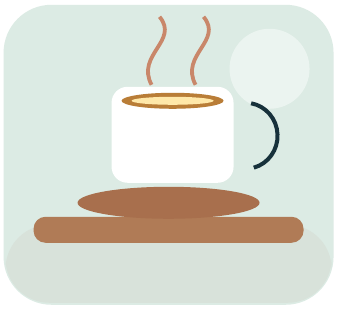

tante
Prononciation
/tɑ̃t/
Une phrase
Voici ma tante.
À retenir
la → féminin

Appuie sur le bouton vert, écoute, puis répète le mot à voix haute.
Voici ma tante.
la → féminin
Voici mon oncle.
mon → masculin

Le thé est chaud.
le → masculin

Bonjour, tante !
Je salue une personne.